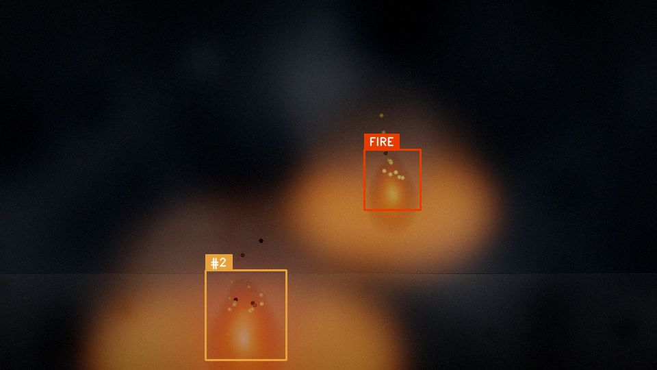
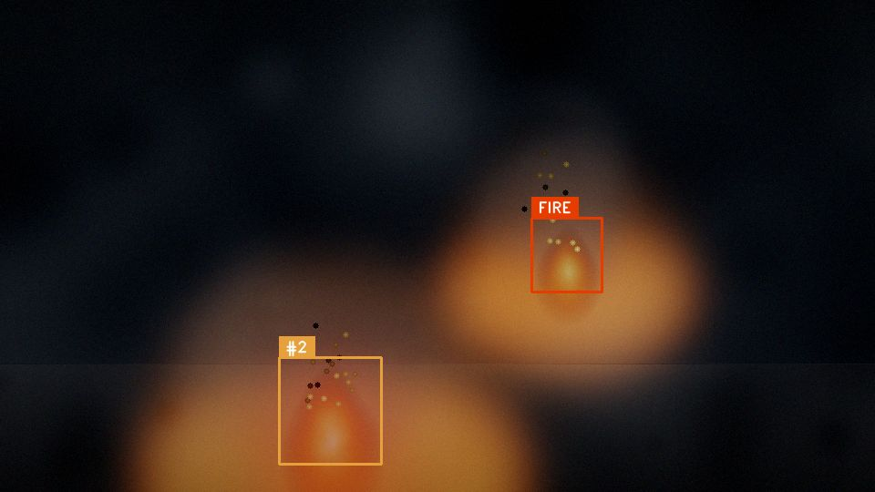
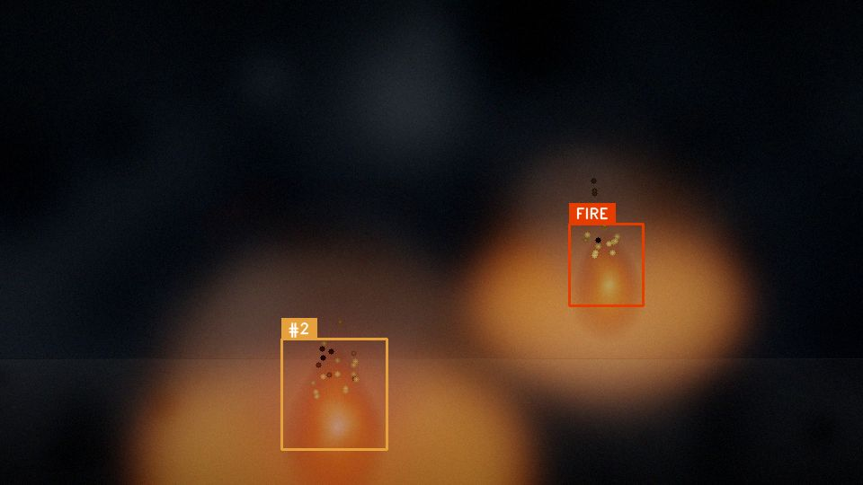

YOLOv8 derin öğrenme, Bulanık Mantık önceliklendirme ve Simulated Annealing rota optimizasyonu ile otonom çalışan, gerçek zamanlı yangın tespit ve müdahale robotu.
Klasik duman dedektörleri yangının ilerlemiş aşamasını yakalar. Erken evrede alev veya kıvılcımı görerek tespit edebilen sistemler ise insana bağımlı: sürekli ekran izleyen biri gerek.
Duman dedektörü alev sahneye çıktıktan sonra tetiklenir. Yangın yayılmış olur.
Kamera sistemi varsa bile gece/mesai dışında izleyen olmaz.
Sabit kameralar açı dışını göremez. Hareketli bir göz lazım.
OYTS, üç katmanlı bir gömülü sistemdir: göz, beyin, kaslar. Hepsi tek bir hedef için: alev daha küçükken durdur.
Wi-Fi MJPEG akış, dinamik çözünürlük, JSON telemetri. Robot üstünde 30 fps canlı yayın.
Donanım eksikliği nedeniyle bu sürümde devre dışı. Yerine webcam veya sentetik kaynak kullanılır.
Motor sürücüsü + servo kolu + voltaj izleme + yangın alarm LED/buzzer.
Tespit, takip, önceliklendirme ve rota optimizasyonu — hepsi gerçek zamanlı.
Görüntü kaynağı (webcam, sentetik veya tasarlanan ESP32-CAM Wi-Fi akışı) her karede YOLOv8 modeline beslenir; alev/duman bbox'ları çıkartılır. v3.1.1 ile model gerçek+sentetik karışık eğitildi (mAP50 0.93/0.60). (ESP32-CAM şu an donanım eksikliği nedeniyle pasif.)
Tespitler 4 fiziksel imzaya bakılır: parlak çekirdek (V≥245), temporal varyans (alev titrer), motion (statik foto 0), saturasyon profili (ten elenir). Kırmızı duvar veya cilt geçemez.
Her bbox'a kalıcı ID atanır. Stable hedefler kararlılaşır, FSM titremesi sıfırlanır. Kısa kayıplarda grace frame devreye girer.
Her hedef piksel alanına göre trapezoidal üyelik fonksiyonlarıyla SMALL/MEDIUM/LARGE/HUGE sınıflarına eşlenir. Mamdani çıkarsama ile 0..1 öncelik skoru. Smoke fire'dan düşük katsayı alır.
Birden fazla yangın varsa SA ile en kısa ziyaret sırası hesaplanır. Sonra durum makinesi (SEARCHING → APPROACHING → TOO_CLOSE → HEAT_ACTION) Arduino'ya motor + alarm komutu gönderir.
Veri akışı tek yönlü değil — her katman diğeriyle gerçek zamanlı protokollerle konuşur.
┌──────────────────────────────────────────────────────────────────────┐
│ PC (Python 3.10+) │
│ ┌──────────┐ ┌─────────────┐ ┌──────────┐ ┌──────────────┐ │
│ │ YOLOv8 │─▶│ IoU Tracker │─▶│ Fuzzy │─▶│ Simulated │ │
│ │ Detector │ │ (grace 10) │ │ Priority │ │ Annealing │ │
│ └────┬─────┘ └─────────────┘ └──────────┘ └──────┬───────┘ │
│ │ │ │
│ ▲ MJPEG (Wi-Fi) ┌──────────────────┘ │
│ │ ▼ │
│ │ ┌──────────────────┐ Decision FSM: │
│ └──┤ Multi-Validator │ SEARCHING→APPROACHING→TOO_CLOSE │
│ │ • bright_core │ +HEAT_ACTION │
│ │ • temporal │ │
│ │ • motion │ │
│ │ • saturation │ │
│ └──────────────────┘ │
│ │ USB Serial 115200 │
└────────────────────────────────────────────┼──────────────────────────┘
▼
┌───────────────────┐ ┌──────────────────────┐
│ ESP32-CAM │ Wi-Fi │ Arduino Mega 2560 │
│ MJPEG Stream │ ←──────→│ L298N + 4WD + Servo │
│ /telemetry │ │ Voltaj izleme │
│ /resolution │ │ Fire LED + Buzzer │
└───────────────────┘ └──────────────────────┘
Sentetik sahne üzerinde gerçek zamanlı tespit + heatmap overlay.



Sentetik sahne sayesinde robot, kamera veya alev olmadan da sistemi uçtan uca görebilirsin.